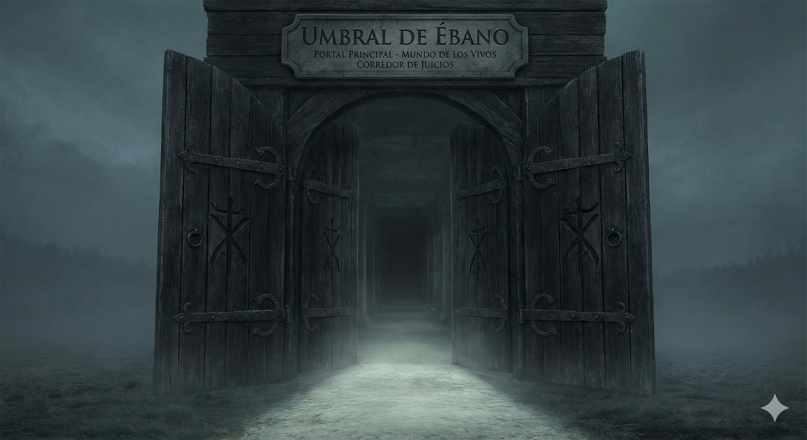
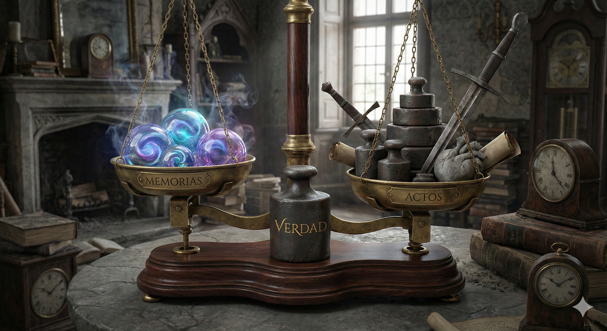
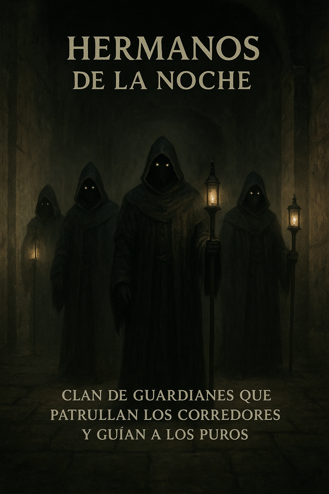

Ebony Threshold
Main portal that separates the world of the living from the courtroom.
The Guardian of Shadows — judge of souls and lord of thresholds
Anubis is a liminal world where night and memory converge. Here, souls traverse ebony corridors and oaths are sealed by moonlight.
What makes this world unique is its blend of ritual and logic: every transition between planes is governed by symbols, guardians, and tests that measure the traveler's truth.
Gallery of essential places, beings and artifacts in Anubis.

Main portal that separates the world of the living from the courtroom.

An instrument that weighs memories against actions; the truth weighs more.

Clan of guardians who patrol the corridors and guide the pure ones.
Records that contain the trials that each soul must face.
The rules governing Anubis are designed to maintain a balance between memory and justice.